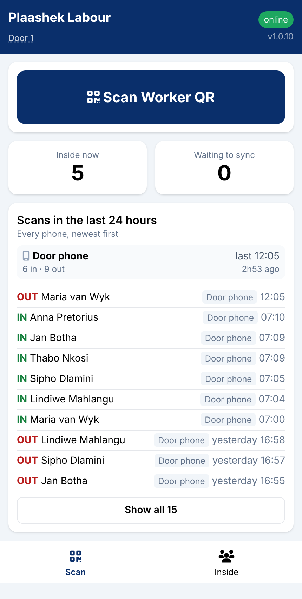
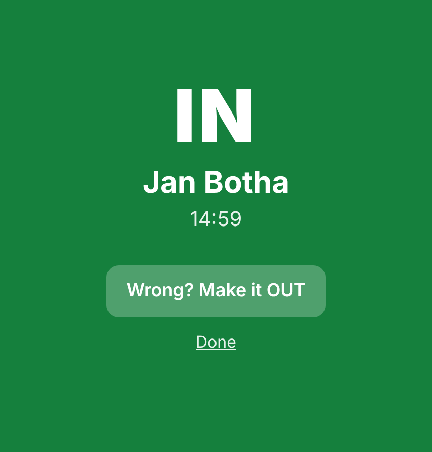
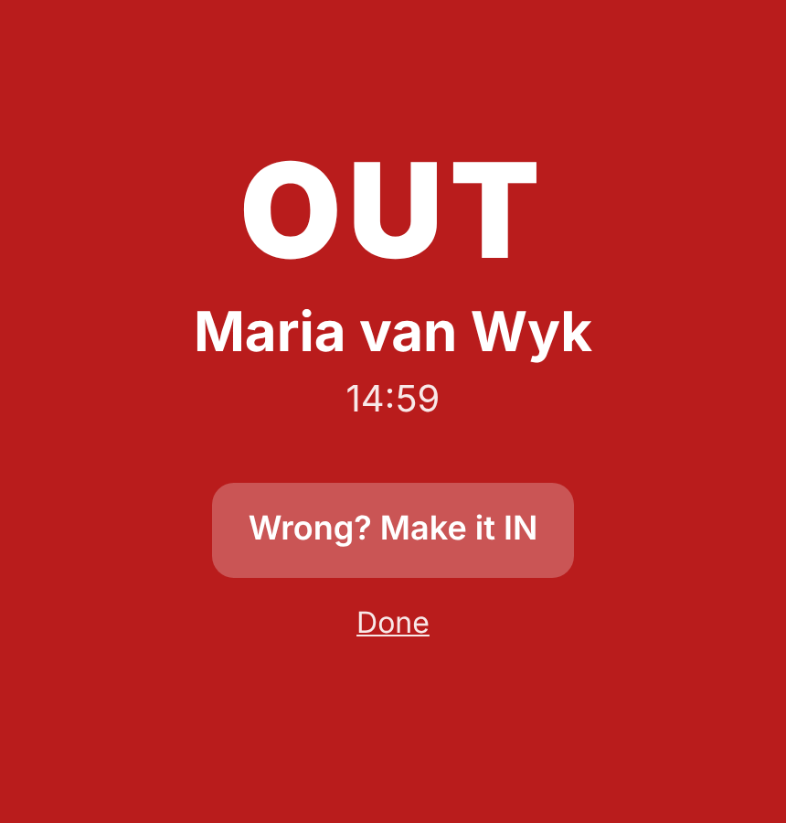
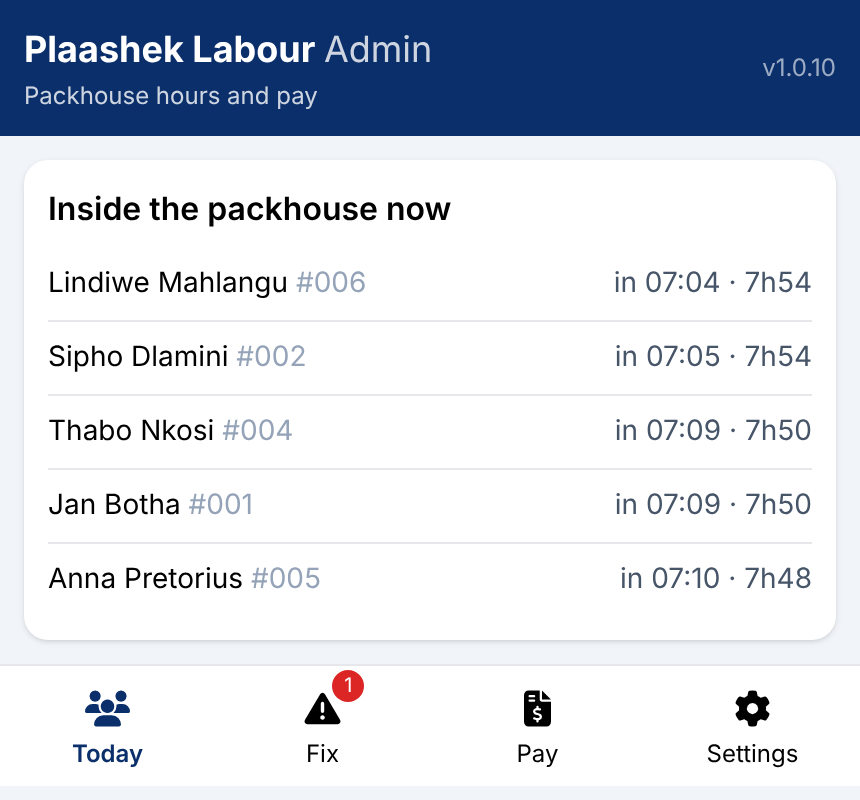
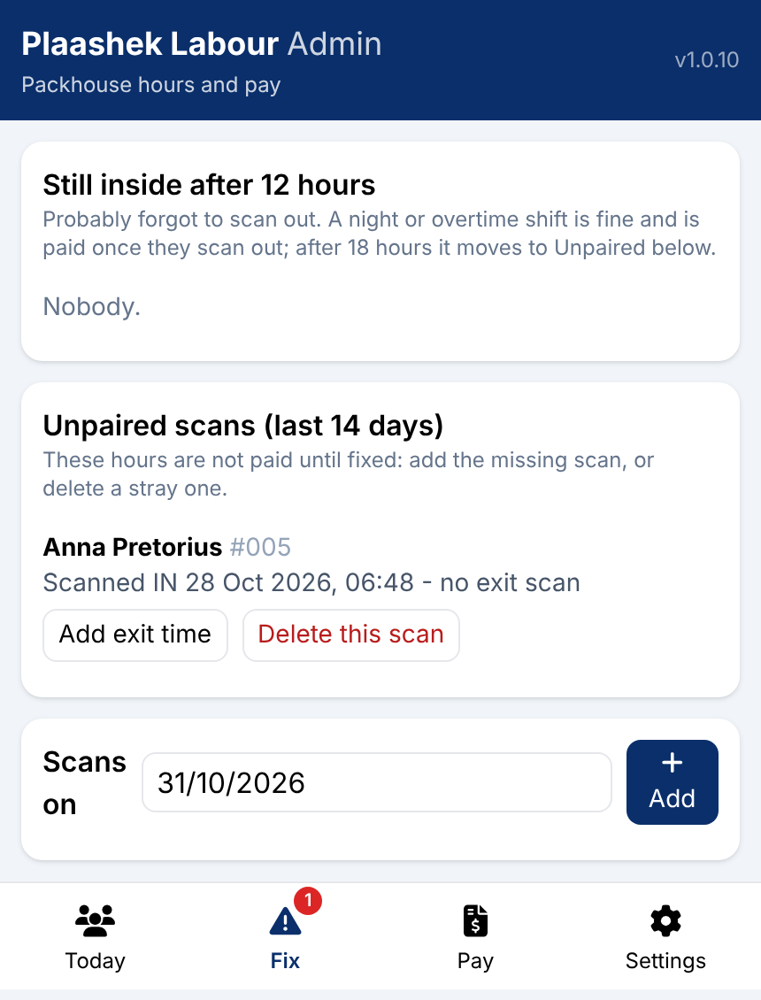
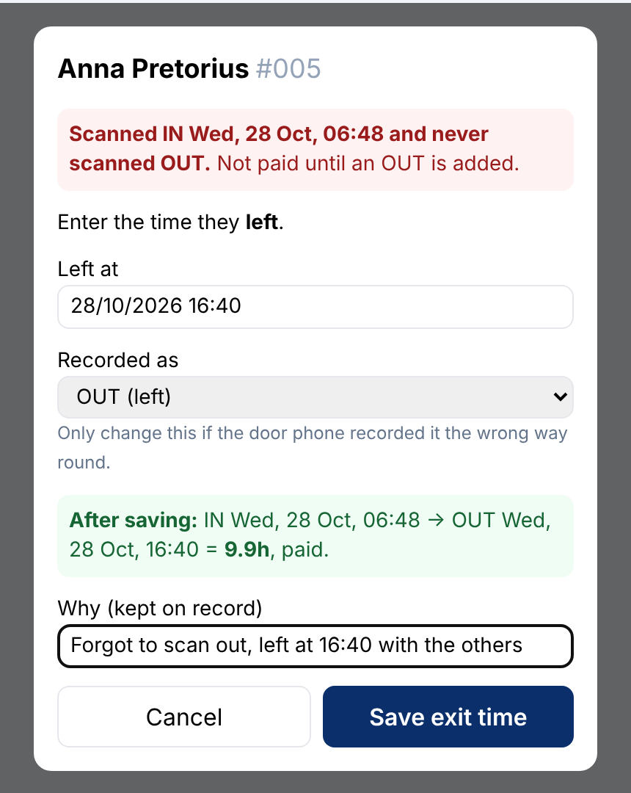
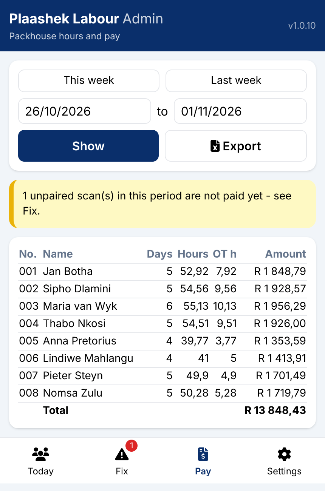
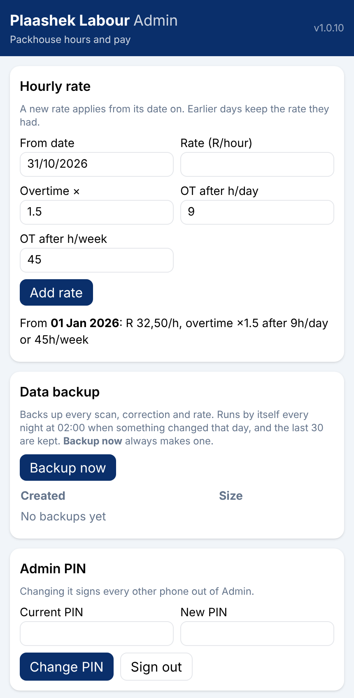

Any phone at the pack-house door. Tap Scan Worker QR, point the camera at the badge, and the screen fills with IN or OUT, the name and the time. The next worker is one tap away.



The admin page is behind a PIN, on the admin's own phone. Today shows who is in the building right now. Fix lists every scan without a partner: those hours are not paid until someone fixes them, with a reason that stays on record.



Pick this week, last week or any dates, tap Show, and every worker's days, hours, overtime hours and amount are there. Export downloads the wage sheet, the shifts behind it and the unresolved scans as three sheets of one spreadsheet.


| Devices | Any Apple or Android phone with a camera, added to the home screen like an app. One or more door phones, one admin phone. |
| Register | Workers, their badges and photos come from Plaashek Harvest's register, read only. Nothing is typed twice. |
| Hosting and data | Your farm lives at yourfarm.plaashek.co.za on a South African hosting service, encrypted in transit and at rest, backed up daily, never shared between farms. |